With press 9, we start by creating a variation of a single page.

Original page.
Variation page.
Our Test Designer enables you to edit HTML and CSS.
We generate the javascript to swap the content and track visitors.
No URL tagging. No redirecting.
Our API allows you to track custom data, like:
- visitor type: free user or premium?
- checkout total
- number of page views
We're building A/B testing tools for developers and designers.
Visitors to the page are randomly shown either the original or the variation.
We then track a visitor's progress to a
goal event.
Examples:
- 'Thanks for signing up' page
- 'Your reciept' page
- Custom defined server-side or client-side event
press 9 statistically tests if the new variation content outperformed the original.
If so, change the original content to the variation content permanently.
Then run another test.